log link benchmarking of Poisson means
DongyueXie
2022-11-05
Last updated: 2022-11-09
Checks: 7 0
Knit directory: gsmash/
This reproducible R Markdown analysis was created with workflowr (version 1.7.0). The Checks tab describes the reproducibility checks that were applied when the results were created. The Past versions tab lists the development history.
Great! Since the R Markdown file has been committed to the Git repository, you know the exact version of the code that produced these results.
Great job! The global environment was empty. Objects defined in the global environment can affect the analysis in your R Markdown file in unknown ways. For reproduciblity it’s best to always run the code in an empty environment.
The command set.seed(20220606) was run prior to running
the code in the R Markdown file. Setting a seed ensures that any results
that rely on randomness, e.g. subsampling or permutations, are
reproducible.
Great job! Recording the operating system, R version, and package versions is critical for reproducibility.
Nice! There were no cached chunks for this analysis, so you can be confident that you successfully produced the results during this run.
Great job! Using relative paths to the files within your workflowr project makes it easier to run your code on other machines.
Great! You are using Git for version control. Tracking code development and connecting the code version to the results is critical for reproducibility.
The results in this page were generated with repository version f169009. See the Past versions tab to see a history of the changes made to the R Markdown and HTML files.
Note that you need to be careful to ensure that all relevant files for
the analysis have been committed to Git prior to generating the results
(you can use wflow_publish or
wflow_git_commit). workflowr only checks the R Markdown
file, but you know if there are other scripts or data files that it
depends on. Below is the status of the Git repository when the results
were generated:
Ignored files:
Ignored: .Rhistory
Ignored: .Rproj.user/
Ignored: data/poisson_mean_simulation/
Untracked files:
Untracked: code/poisson_mean/simulation_summary.R
Untracked: output/poisson_mean_simulation/
Untracked: output/poisson_smooth_simulation/
Unstaged changes:
Modified: code/poisson_mean/neg_binom_mean_lower_bound.R
Modified: code/poisson_smooth/simulation_study_run_smooth.R
Note that any generated files, e.g. HTML, png, CSS, etc., are not included in this status report because it is ok for generated content to have uncommitted changes.
These are the previous versions of the repository in which changes were
made to the R Markdown (analysis/log_link_benchmarking.Rmd)
and HTML (docs/log_link_benchmarking.html) files. If you’ve
configured a remote Git repository (see ?wflow_git_remote),
click on the hyperlinks in the table below to view the files as they
were in that past version.
| File | Version | Author | Date | Message |
|---|---|---|---|---|
| Rmd | f169009 | DongyueXie | 2022-11-09 | wflow_publish(c("analysis/log_link_benchmarking.Rmd", "analysis/exp_prior_benchmark.Rmd", |
| Rmd | 9f64a43 | DongyueXie | 2022-11-08 | analyze benchmark res |
Introduction
We compare the methods with log-link on estimating the latent \(\mu\) under the following simulation settings. We generate \(n=1000\) samples from \(y_j\sim \Poi(\exp(\mu_j))\), and \(\mu_j\) are generated under the following different data-generating distributions. Each simulation was repeated for 50 times.
library(vebpm)
library(ggplot2)
library(tidyverse)── Attaching packages ─────────────────────────────────────── tidyverse 1.3.2 ──
✔ tibble 3.1.8 ✔ dplyr 1.0.10
✔ tidyr 1.2.1 ✔ stringr 1.4.1
✔ readr 2.1.3 ✔ forcats 0.5.2
✔ purrr 0.3.5
── Conflicts ────────────────────────────────────────── tidyverse_conflicts() ──
✖ dplyr::filter() masks stats::filter()
✖ dplyr::lag() masks stats::lag()source('code/poisson_mean/simulation_summary.R')\(\mu_j \sim \pi_0\delta_0 + \pi_1N(0,2)\).
out = readRDS('output/poisson_mean_simulation/poisson_mean/log_link50_n_1000_priormean_0_priorvar1_2.rds')get_summary_mean(out)
| | mean| sd|
|:-----------------|-----:|-----:|
|split_mixture | 0.621| 0.190|
|ash_pois_identity | 0.649| 0.184|
|GMGM | 0.651| 0.219|
|penalty_inversion | 0.667| 0.200|
|GMGM_pointmass | 0.686| 0.198|
|penalty_compound | 0.717| 0.204|
|GMG | 0.739| 0.223|
|log1exp | 0.745| 0.202|
|split | 0.750| 0.193|
|GG | 0.804| 0.251|
|ebpm_exp_mixture | 0.812| 0.197|
|nb_pg | 1.425| 0.646|
|nb_lb | 1.425| 0.646|
|ash_pois_log | 1.519| 0.198|
|ebpm_gamma | 2.235| 2.098|Warning: Removed 5 rows containing non-finite values (stat_boxplot).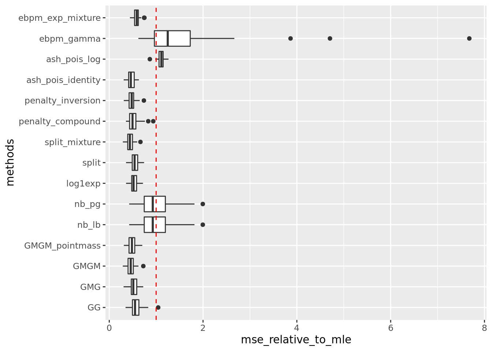
get_summary_mean_log(out,rm_method = 'ash_pois_log')
| | mean| sd|
|:-----------------|-----:|-----:|
|split_mixture | 0.237| 0.027|
|ash_pois_identity | 0.249| 0.027|
|penalty_inversion | 0.252| 0.030|
|penalty_compound | 0.252| 0.038|
|GMGM | 0.261| 0.041|
|GMGM_pointmass | 0.265| 0.032|
|split | 0.266| 0.031|
|log1exp | 0.272| 0.032|
|GG | 0.319| 0.038|
|GMG | 0.327| 0.059|
|nb_lb | 0.352| 0.047|
|nb_pg | 0.352| 0.047|
|ebpm_exp_mixture | 0.687| 0.043|
|ebpm_gamma | 0.689| 0.290|Warning: Removed 5 rows containing non-finite values (stat_boxplot).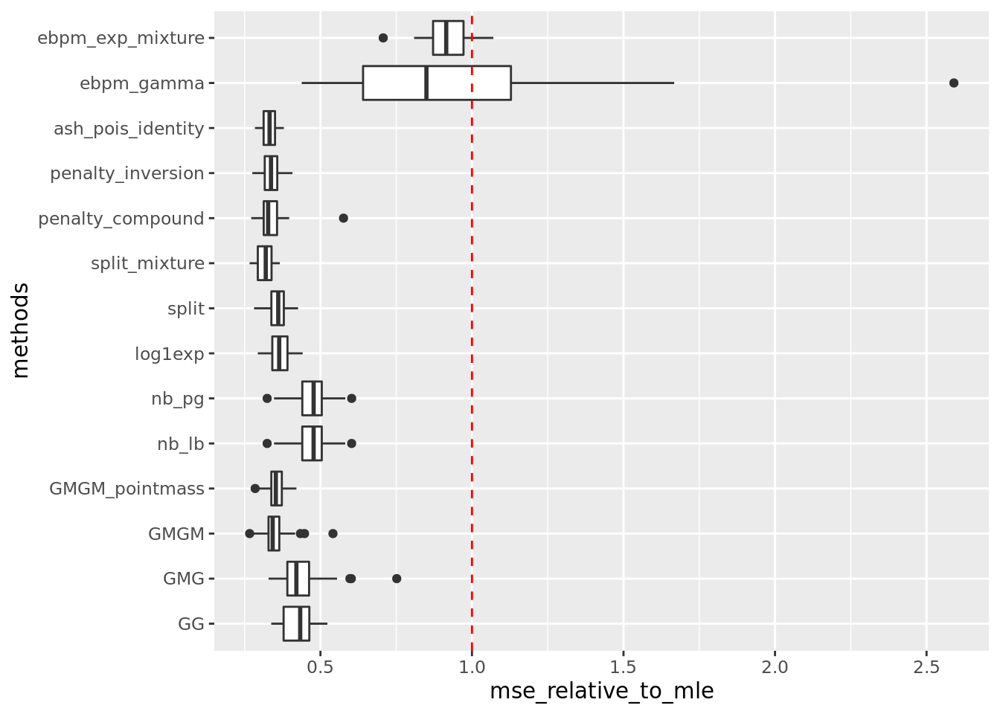
plot(out$sim_data$log_Mean[1,],col='grey80',main='log_mean',ylab='')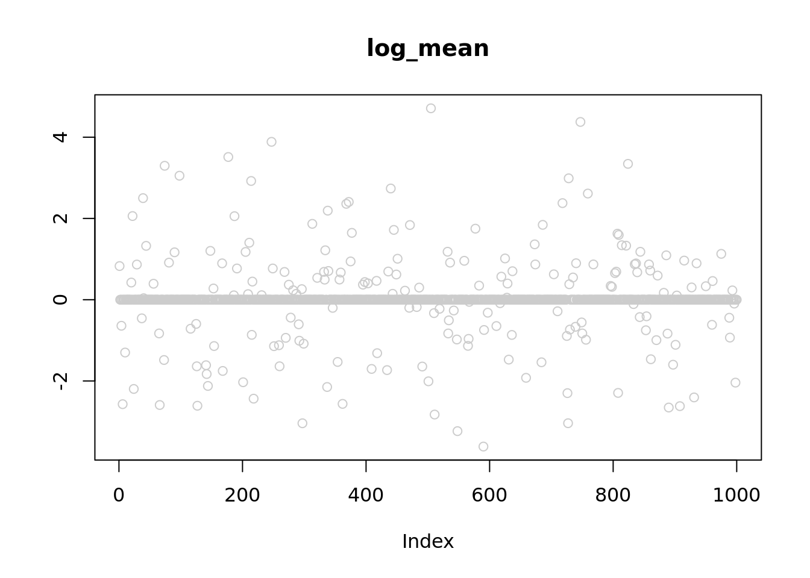
plot(out$sim_data$Mean[1,],col='grey80',main='log_mean',ylab='')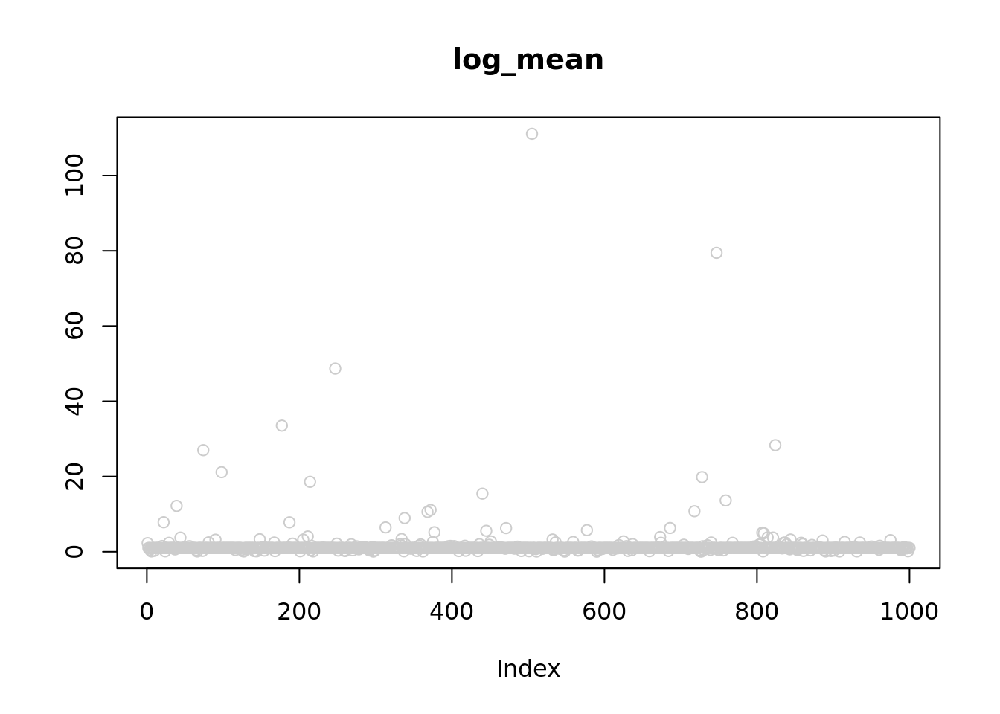
\(\mu_j \sim \pi_0\delta_3 + \pi_1N(3,2)\)
out = readRDS('output/poisson_mean_simulation/poisson_mean/log_link50_n_1000_priormean_3_priorvar1_2.rds')get_summary_mean(out)
| | mean| sd|
|:-----------------|------:|------:|
|penalty_compound | 13.386| 2.754|
|split_mixture | 13.389| 2.768|
|ash_pois_log | 13.543| 2.694|
|GMGM_pointmass | 13.605| 2.767|
|GMGM | 14.103| 3.020|
|ash_pois_identity | 14.758| 3.537|
|GMG | 17.478| 6.765|
|split | 17.688| 2.884|
|penalty_inversion | 18.459| 4.435|
|log1exp | 24.120| 4.152|
|GG | 24.304| 2.911|
|ebpm_exp_mixture | 25.635| 2.636|
|ebpm_gamma | 35.205| 7.924|
|nb_lb | 48.847| 19.043|
|nb_pg | 48.862| 19.035|Warning: Removed 34 rows containing non-finite values (stat_boxplot).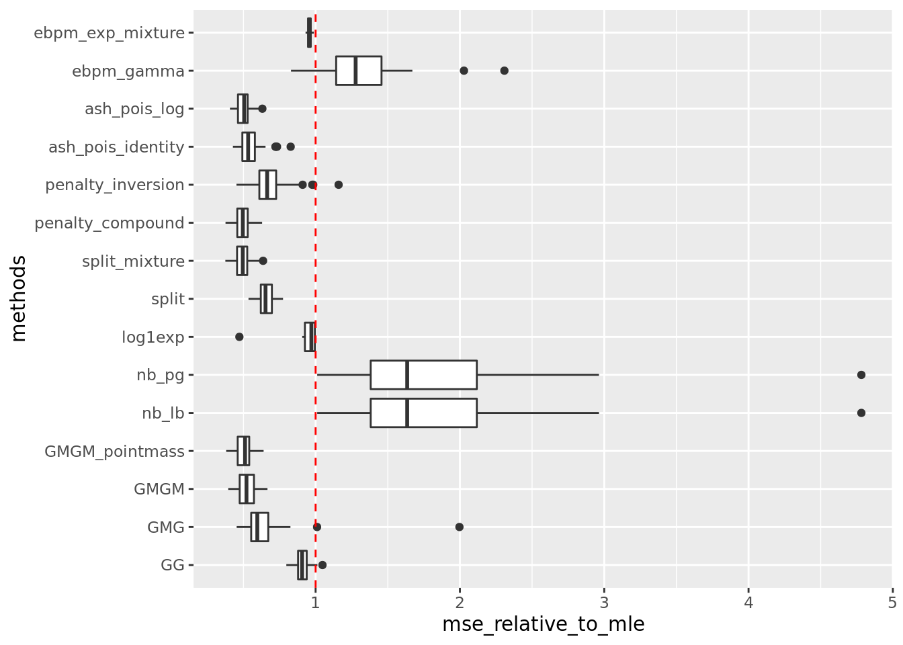
get_summary_mean_log(out)
| | mean| sd|
|:-----------------|-----:|-----:|
|split_mixture | 0.029| 0.004|
|penalty_compound | 0.029| 0.004|
|GMGM_pointmass | 0.030| 0.004|
|GMGM | 0.031| 0.004|
|ash_pois_identity | 0.032| 0.005|
|penalty_inversion | 0.038| 0.006|
|GMG | 0.038| 0.006|
|split | 0.054| 0.007|
|ebpm_gamma | 0.059| 0.005|
|ebpm_exp_mixture | 0.064| 0.004|
|log1exp | 0.065| 0.005|
|GG | 0.077| 0.010|
|ash_pois_log | 0.097| 0.044|
|nb_lb | 0.225| 0.037|
|nb_pg | 0.225| 0.037|Warning: Removed 34 rows containing non-finite values (stat_boxplot).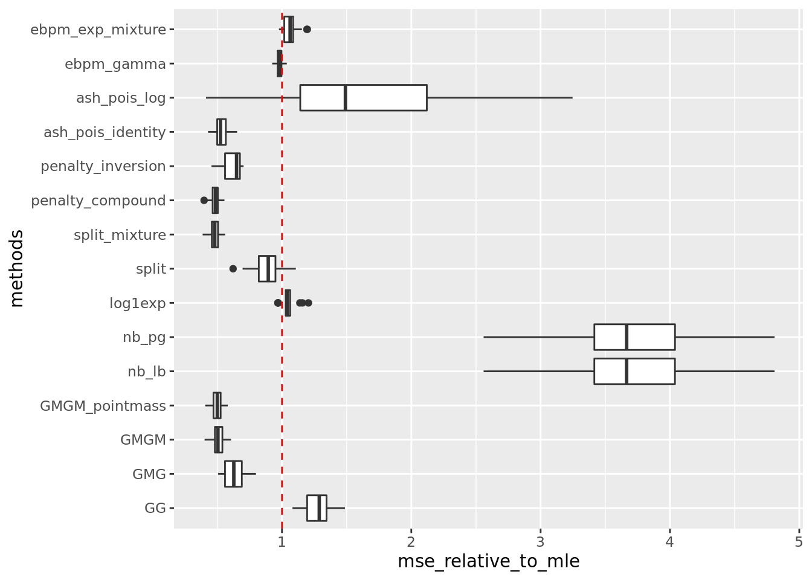
\(\mu_j \sim \pi_0\delta_5 + \pi_1N(5,2)\)
out = readRDS('output/poisson_mean_simulation/poisson_mean/log_link50_n_1000_priormean_5_priorvar1_2.rds')get_summary_mean(out,rm_method = c('nb_lb','nb_pg'))
| | mean| sd|
|:-----------------|-------:|------:|
|GMGM_pointmass | 91.837| 28.550|
|GMGM | 93.187| 29.139|
|split_mixture | 93.566| 29.166|
|penalty_compound | 94.482| 34.093|
|ash_pois_identity | 96.301| 33.296|
|GMG | 105.991| 34.532|
|split | 118.585| 28.737|
|ash_pois_log | 125.847| 38.735|
|penalty_inversion | 188.016| 36.860|
|GG | 196.293| 29.259|
|ebpm_exp_mixture | 197.758| 27.850|
|ebpm_gamma | 210.223| 37.791|
|log1exp | NaN| NA|Warning: Removed 50 rows containing non-finite values (stat_boxplot).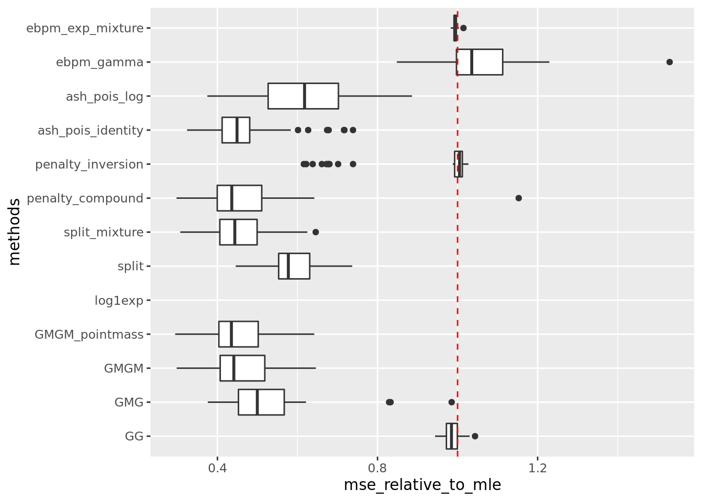
get_summary_mean_log(out,rm_method = c('nb_lb','nb_pg'))
| | mean| sd|
|:-----------------|-----:|-----:|
|ash_pois_identity | 0.004| 0.001|
|penalty_compound | 0.004| 0.001|
|GMGM_pointmass | 0.004| 0.001|
|split_mixture | 0.004| 0.001|
|GMG | 0.004| 0.001|
|split | 0.006| 0.001|
|GMGM | 0.006| 0.009|
|penalty_inversion | 0.008| 0.001|
|ebpm_gamma | 0.009| 0.001|
|ash_pois_log | 0.009| 0.012|
|ebpm_exp_mixture | 0.009| 0.001|
|GG | 0.012| 0.003|
|log1exp | NaN| NA|Warning: Removed 50 rows containing non-finite values (stat_boxplot).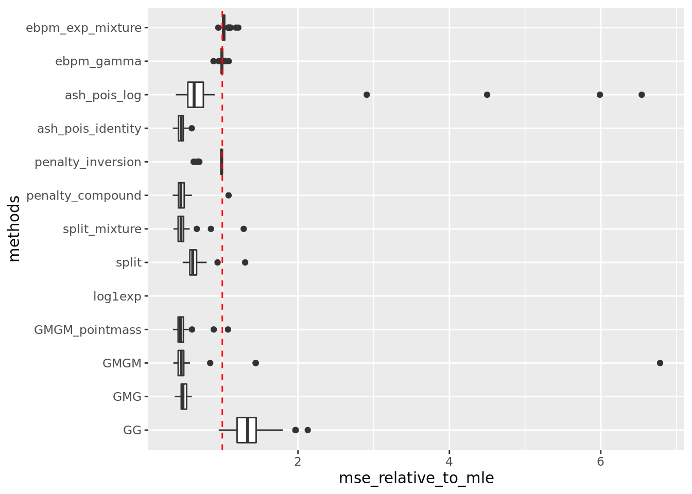
Why NB method performs bad?
Its performance is getting worse as x getting larger.
I set \(r = 2*max(y)\). So sometimes \(r\) is of order \(10^5\), which is too large. We see from the results that setting \(r\) large likely let veb algorithm get stuck at local optimum.
Let see 4 examples when NB methods perform worst of itself.
par(mfrow=(c(2,2)))
for(i in c(1,21,23,24)){
plot(out$sim_data$log_Mean[i,],col='grey80')
lines(out$output[[i]]$fitted_model$nb_lb$posterior$mean_log)
}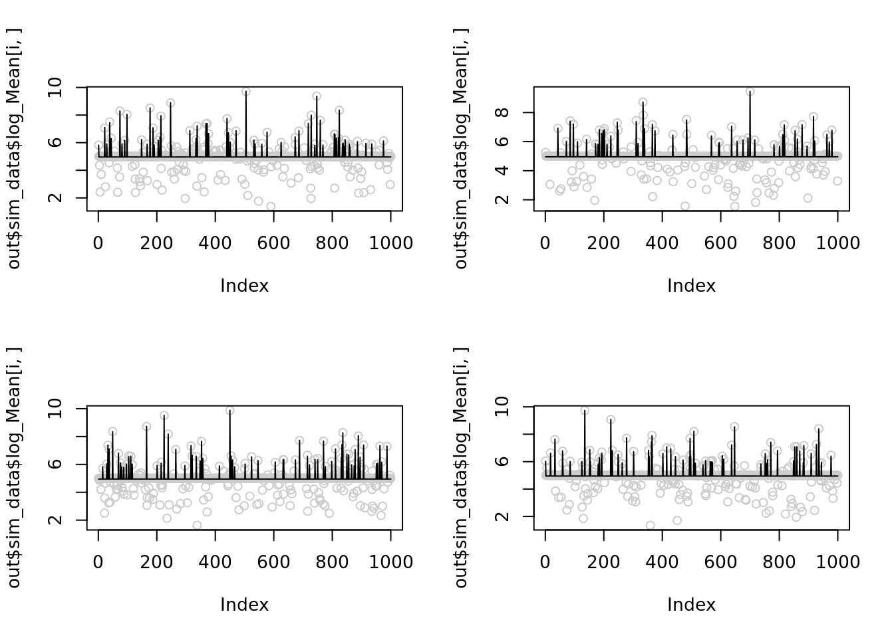
The corresponding \(r\) are
for(i in c(1,21,23,24)){
print(2*(max(out$sim_data$X[i,])))
}[1] 33206
[1] 25388
[1] 39004
[1] 33638Let’s reduce \(r\) to 1000 for the 1st simulation and see it improves
for(i in c(1,21,23,24)){
temp = nb_mean_lower_bound(out$sim_data$X[i,],r=1000)
plot(out$sim_data$log_Mean[i,],col='grey80')
lines(temp$posterior$mean_log)
print(mse(out$sim_data$log_Mean[i,],temp$posterior$mean_log))
}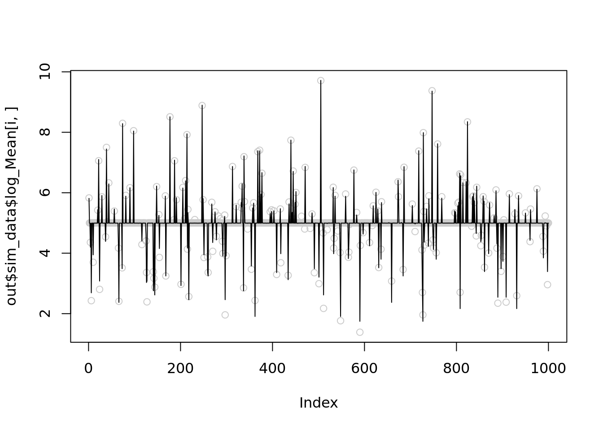
[1] 0.005603312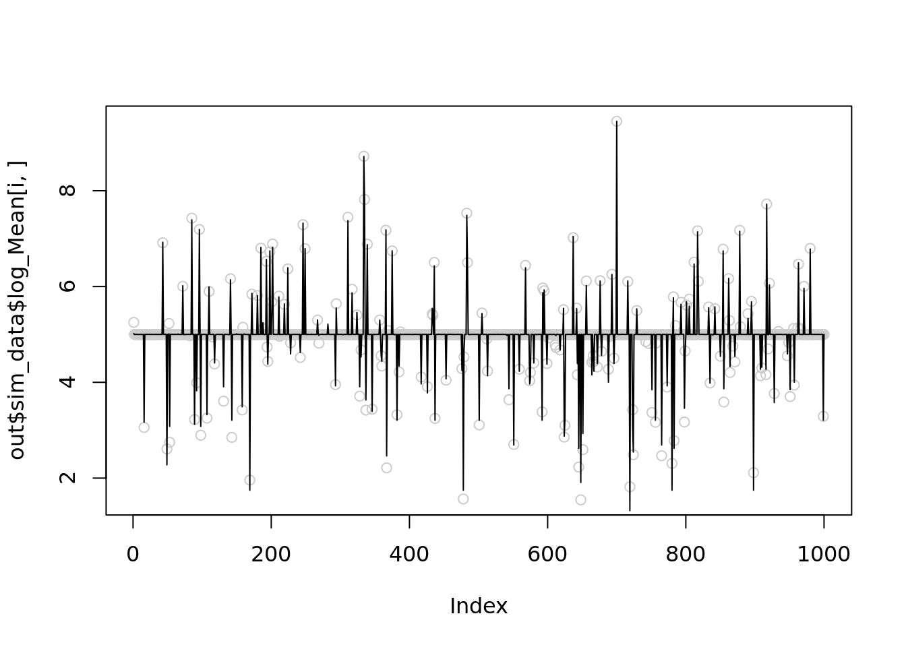
[1] 0.004091247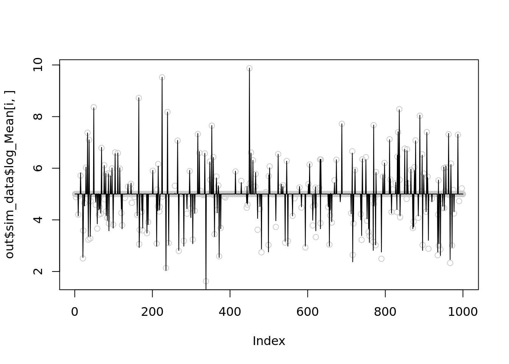
[1] 0.003240434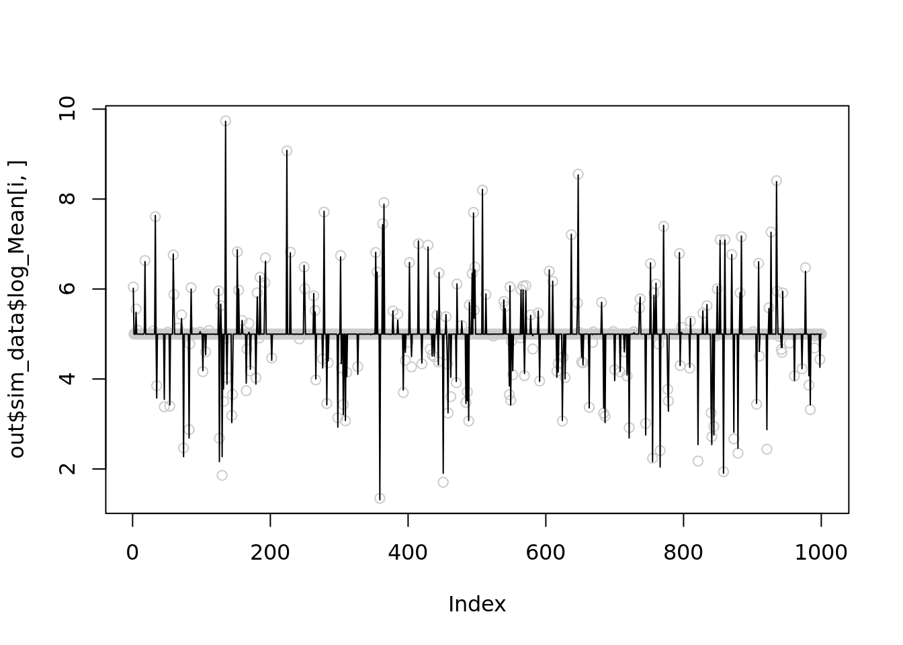
[1] 0.003374317Further reduce \(r\) to 100
for(i in c(1,21,23,24)){
temp = nb_mean_lower_bound(out$sim_data$X[i,],r=100)
plot(out$sim_data$log_Mean[i,],col='grey80')
lines(temp$posterior$mean_log)
print(mse(out$sim_data$log_Mean[i,],temp$posterior$mean_log))
}Warning in nb_mean_lower_bound(out$sim_data$X[i, ], r = 100): An iteration
decreases ELBO. This is likely due to numerical issues.[1] 0.00644856[1] 0.004579017[1] 0.00372007Warning in nb_mean_lower_bound(out$sim_data$X[i, ], r = 100): An iteration
decreases ELBO. This is likely due to numerical issues.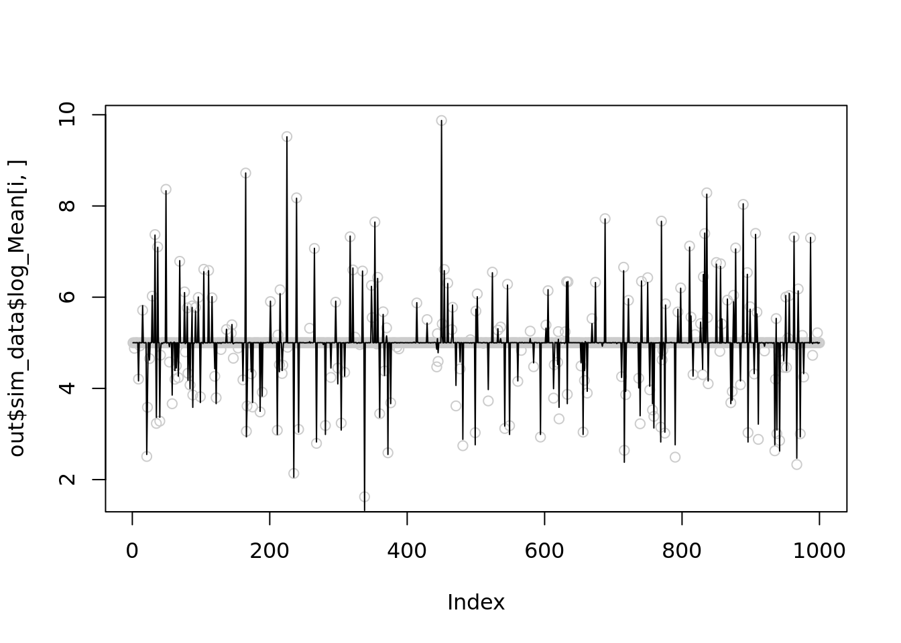
[1] 0.003922867It seems that setting \(r=1000\) is slightly better than \(100\), but both are significantly better than \(r\sim10^5\).
What happend to inversion penalization method?
Its performance is getting worse as x getting larger.
It seems that it has some convergence issues here. The estimated prior weights are still at the uniform initialization stage.
out$output[[1]]$fitted_model$penalty_inversion$fitted_g$weight
[1] 0.03105418 0.03105418 0.03105419 0.03105419 0.03105420 0.03105423
[7] 0.03105427 0.03105435 0.03105453 0.03105487 0.03105555 0.03105691
[13] 0.03105960 0.03106485 0.03107505 0.03109569 0.03114548 0.03128040
[19] 0.03154961 0.03183850 0.03196651 0.03191920 0.03178937 0.03164999
[25] 0.03152506 0.03141308 0.03131381 0.03123111 0.03116660 0.03111848
[31] 0.03108351 0.03105844
$mean
[1] 4.996289
$sd
[1] 0.000000e+00 5.930995e-04 8.387693e-04 1.186199e-03 1.677539e-03
[6] 2.372398e-03 3.355077e-03 4.744796e-03 6.710154e-03 9.489591e-03
[11] 1.342031e-02 1.897918e-02 2.684062e-02 3.795837e-02 5.368124e-02
[16] 7.591673e-02 1.073625e-01 1.518335e-01 2.147249e-01 3.036669e-01
[21] 4.294499e-01 6.073339e-01 8.588998e-01 1.214668e+00 1.717800e+00
[26] 2.429335e+00 3.435599e+00 4.858671e+00 6.871198e+00 9.717342e+00
[31] 1.374240e+01 1.943468e+01Check the gradient of posterior mean
plot(vebpm:::f_obj_grad(out$output[[1]]$fitted_model$penalty_inversion$fit$optim_fit$par,out$sim_data$X[1,],out$output[[1]]$fitted_model$penalty_inversion$fitted_g$sd)[1:1000],ylab='gradient')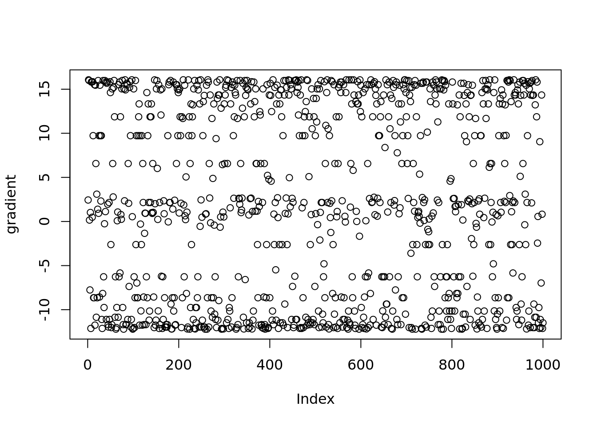
Check the gradient of prior weight
plot(vebpm:::f_obj_grad(out$output[[1]]$fitted_model$penalty_inversion$fit$optim_fit$par,out$sim_data$X[1,],out$output[[1]]$fitted_model$penalty_inversion$fitted_g$sd)[1001:1032],ylab='gradient')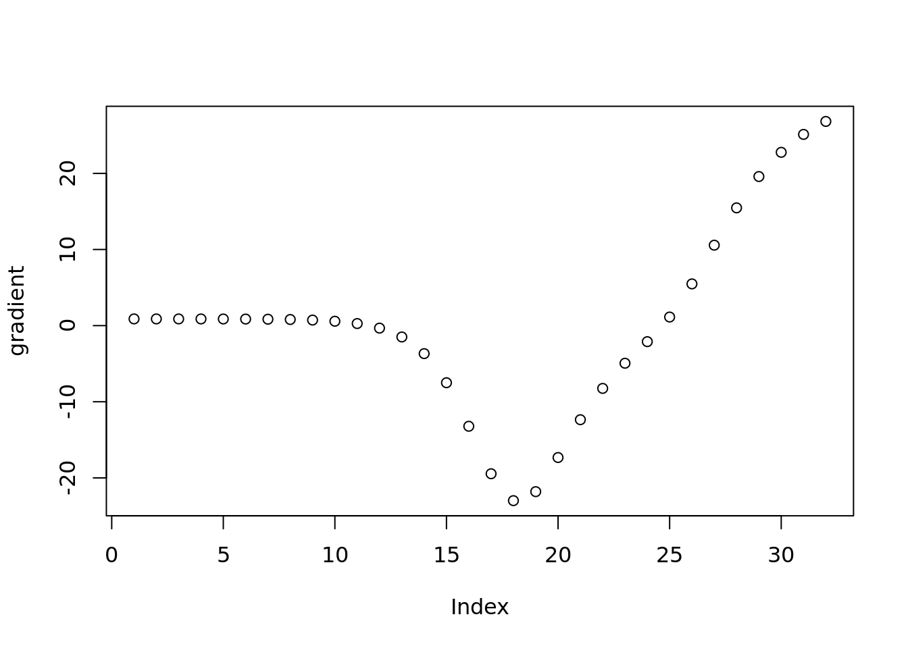
Check the gradient of prior mean
plot(vebpm:::f_obj_grad(out$output[[1]]$fitted_model$penalty_inversion$fit$optim_fit$par,out$sim_data$X[1,],out$output[[1]]$fitted_model$penalty_inversion$fitted_g$sd)[1033],ylab='gradient')
It’s not converging! Because the LBFGSB in optim uses
relative tol(tol*f_value) for monitoring the convergence and the f_value
is too large so iterations stop before convergence.
Need to increase number of iterations.
temp= pois_mean_penalized_inversion(out$sim_data$X[1,],tol=1e-10)
temp$fitted_g$weight
mse(temp$posterior$mean,out$sim_data$Mean[1,])
sessionInfo()R version 4.2.1 (2022-06-23)
Platform: x86_64-pc-linux-gnu (64-bit)
Running under: Ubuntu 20.04.5 LTS
Matrix products: default
BLAS: /usr/lib/x86_64-linux-gnu/blas/libblas.so.3.9.0
LAPACK: /usr/lib/x86_64-linux-gnu/lapack/liblapack.so.3.9.0
locale:
[1] LC_CTYPE=C.UTF-8 LC_NUMERIC=C LC_TIME=C.UTF-8
[4] LC_COLLATE=C.UTF-8 LC_MONETARY=C.UTF-8 LC_MESSAGES=C.UTF-8
[7] LC_PAPER=C.UTF-8 LC_NAME=C LC_ADDRESS=C
[10] LC_TELEPHONE=C LC_MEASUREMENT=C.UTF-8 LC_IDENTIFICATION=C
attached base packages:
[1] stats graphics grDevices utils datasets methods base
other attached packages:
[1] forcats_0.5.2 stringr_1.4.1 dplyr_1.0.10 purrr_0.3.5
[5] readr_2.1.3 tidyr_1.2.1 tibble_3.1.8 tidyverse_1.3.2
[9] ggplot2_3.3.6 vebpm_0.1.6 workflowr_1.7.0
loaded via a namespace (and not attached):
[1] matrixStats_0.62.0 fs_1.5.2 lubridate_1.9.0
[4] httr_1.4.4 rprojroot_2.0.3 tools_4.2.1
[7] backports_1.4.1 bslib_0.4.0 utf8_1.2.2
[10] R6_2.5.1 irlba_2.3.5.1 DBI_1.1.3
[13] colorspace_2.0-3 withr_2.5.0 tidyselect_1.2.0
[16] processx_3.7.0 ebpm_0.0.1.3 compiler_4.2.1
[19] git2r_0.30.1 rvest_1.0.3 cli_3.4.1
[22] xml2_1.3.3 labeling_0.4.2 horseshoe_0.2.0
[25] sass_0.4.2 scales_1.2.1 SQUAREM_2021.1
[28] callr_3.7.2 mixsqp_0.3-43 digest_0.6.29
[31] rmarkdown_2.17 deconvolveR_1.2-1 pkgconfig_2.0.3
[34] htmltools_0.5.3 highr_0.9 dbplyr_2.2.1
[37] fastmap_1.1.0 invgamma_1.1 rlang_1.0.6
[40] readxl_1.4.1 rstudioapi_0.14 farver_2.1.1
[43] jquerylib_0.1.4 generics_0.1.3 jsonlite_1.8.2
[46] googlesheets4_1.0.1 magrittr_2.0.3 Matrix_1.5-1
[49] Rcpp_1.0.9 munsell_0.5.0 fansi_1.0.3
[52] lifecycle_1.0.3 stringi_1.7.8 whisker_0.4
[55] yaml_2.3.5 nleqslv_3.3.3 rootSolve_1.8.2.3
[58] plyr_1.8.7 grid_4.2.1 parallel_4.2.1
[61] promises_1.2.0.1 crayon_1.5.2 lattice_0.20-45
[64] haven_2.5.1 splines_4.2.1 hms_1.1.2
[67] knitr_1.40 ps_1.7.1 pillar_1.8.1
[70] reshape2_1.4.4 reprex_2.0.2 glue_1.6.2
[73] evaluate_0.17 trust_0.1-8 getPass_0.2-2
[76] modelr_0.1.9 vctrs_0.4.2 nloptr_2.0.3
[79] tzdb_0.3.0 httpuv_1.6.6 cellranger_1.1.0
[82] gtable_0.3.1 ebnm_1.0-9 assertthat_0.2.1
[85] ashr_2.2-54 cachem_1.0.6 xfun_0.33
[88] broom_1.0.1 later_1.3.0 googledrive_2.0.0
[91] gargle_1.2.1 truncnorm_1.0-8 timechange_0.1.1
[94] ellipsis_0.3.2